Manche Bilder entstehen aus einer Geschichte, die sich nicht in Worte fassen lässt.
Die künstlerische Fotografie ist der ruhigste Teil meiner Arbeit, aber oft der Ort, an dem viele meiner Fragen beginnen.
Ein persönliches künstlerisches Porträt, ein privater Auftrag oder ein langfristiges Projekt braucht Zeit, Vertrauen und eine andere Art von Aufmerksamkeit. Es geht weniger um Zeigen, mehr um Erkennen.
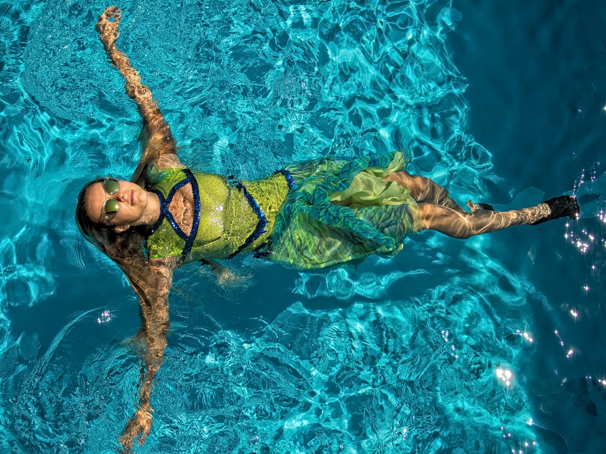
Warum Kunst zählt
Nicht jedes Bild entsteht aus einem geschäftlichen Grund. Manche Bilder entstehen, weil ein Gedanke lange bleibt.
Diese Arbeiten verbinden sich mit meinen Büchern, Ausstellungen und persönlichen Projekten. Sie bleiben privat, wenn sie privat bleiben sollen, und werden erst öffentlich, wenn die Geschichte bereit ist.
Wie ich den Raum halte
Wir beginnen mit einem Gespräch über Grenzen, Absicht und Atmosphäre. Nichts wird beschleunigt. Nichts wird erzwungen.
Ziel ist nicht Provokation. Es geht um Würde, Ehrlichkeit und eine visuelle Sprache, die der Mensch auch Jahre später noch als die eigene empfindet.
Wem ich helfen kann
Für Menschen, die einen ruhigen, respektvollen und künstlerischen Bildprozess suchen: Porträt, persönliches visuelles Projekt, Fine Art, Lingerie oder Aktfotografie mit Würde.
Was wir gemeinsam schaffen
Ein geschützter kreativer Prozess, klare Grenzen, künstlerische Richtung und ein Ergebnis, das als persönliches Kunstwerk, Kampagnenbild oder ausstellungsfähiges Porträt bestehen kann.
Auch die Erfahrung zählt.
Ich möchte, dass die Session sicher, ruhig und ungezwungen bleibt. In der künstlerischen Arbeit entsteht das wichtigste Bild oft erst dann, wenn Vertrauen genug Zeit hatte.
Eine kuratierte Bildauswahl
Künstlerische Fotografie von Norbert Banhalmi über Körper, Vertrauen, Verletzlichkeit, Identität und stille visuelle Präsenz.
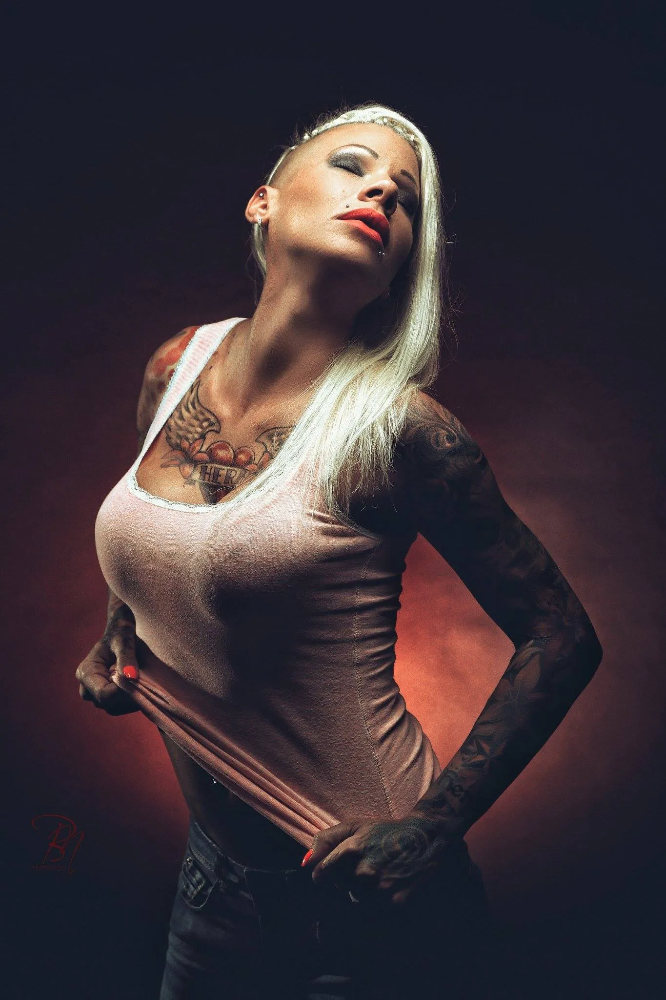
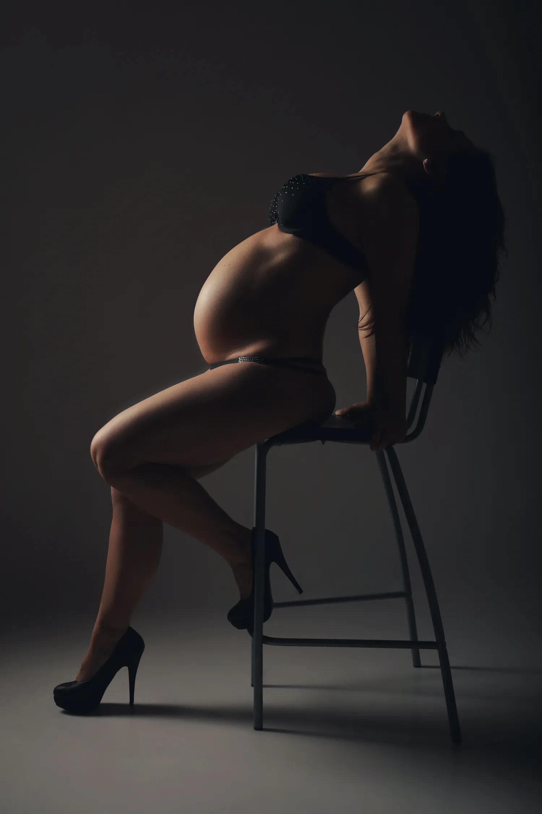
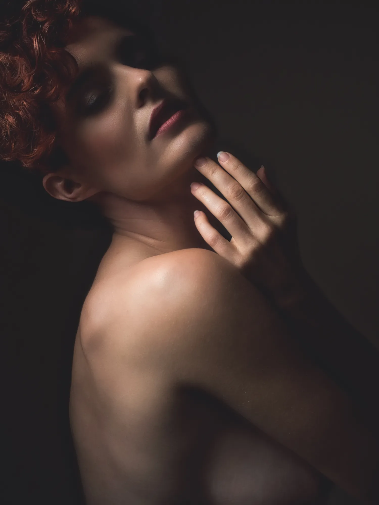
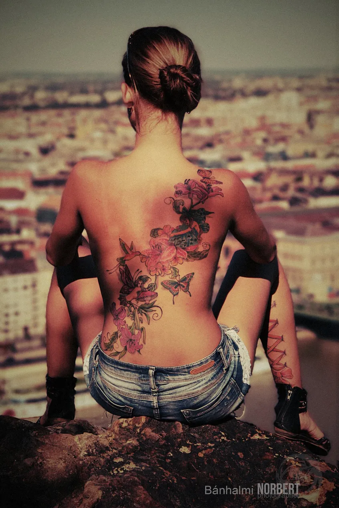
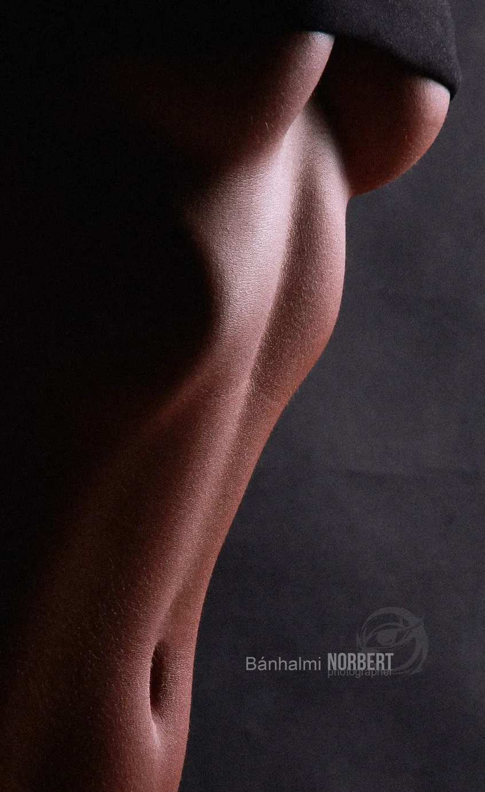
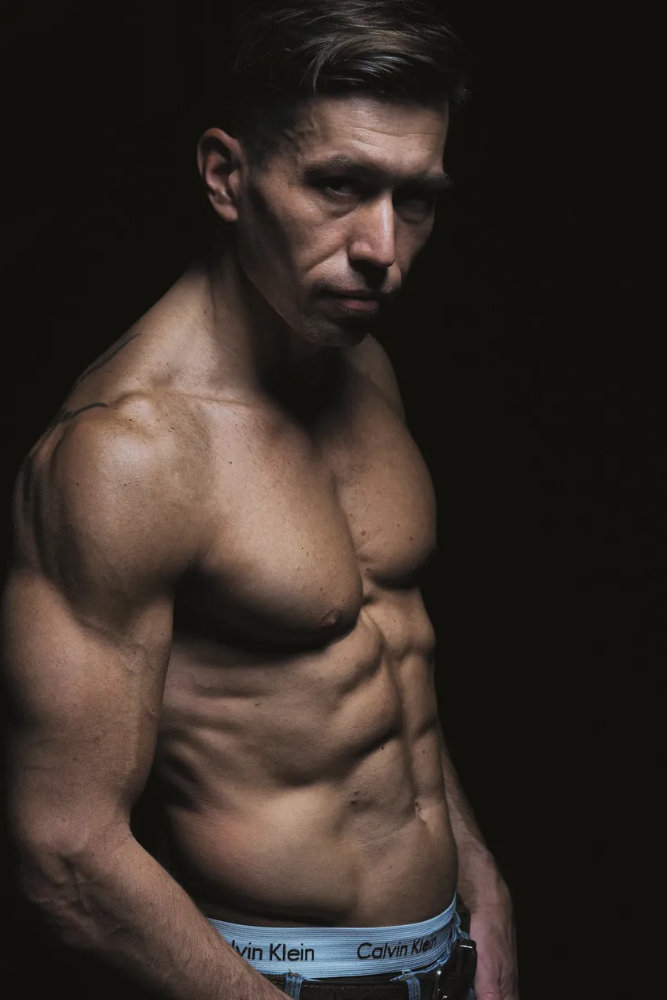
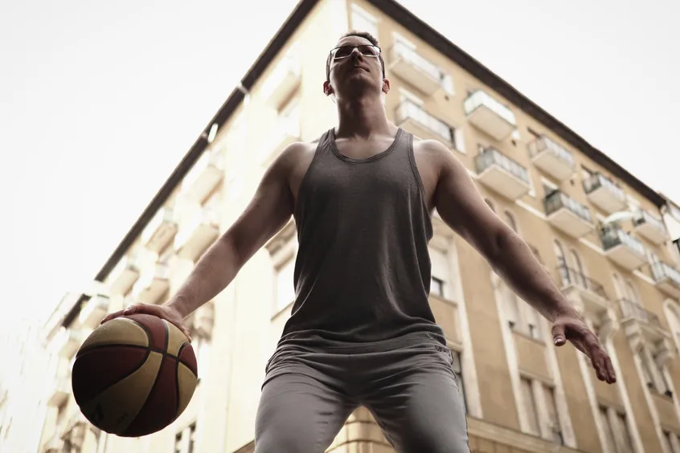
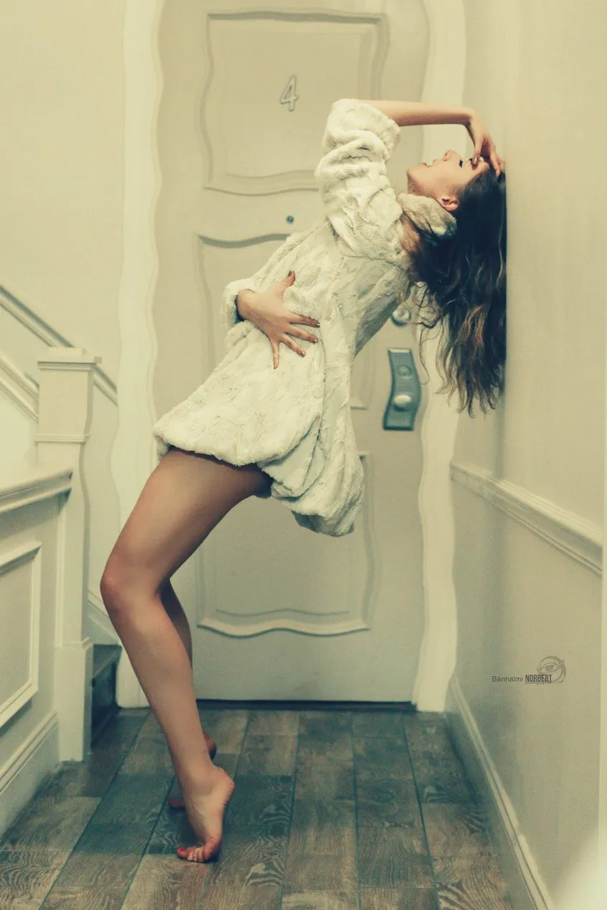
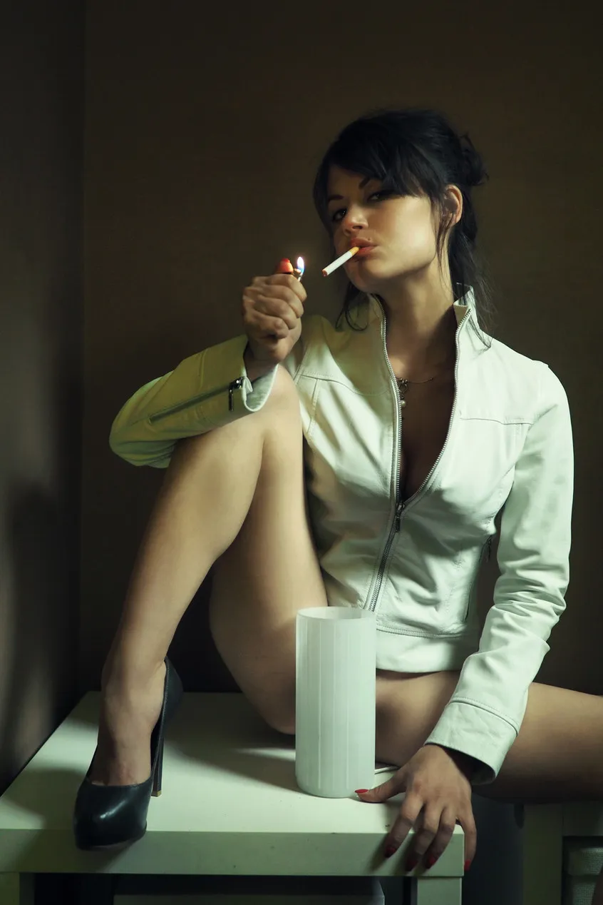
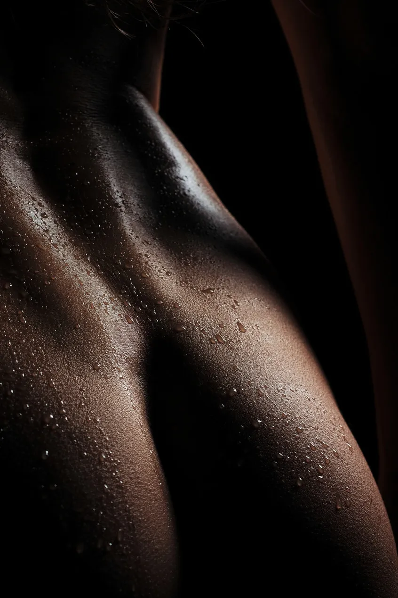
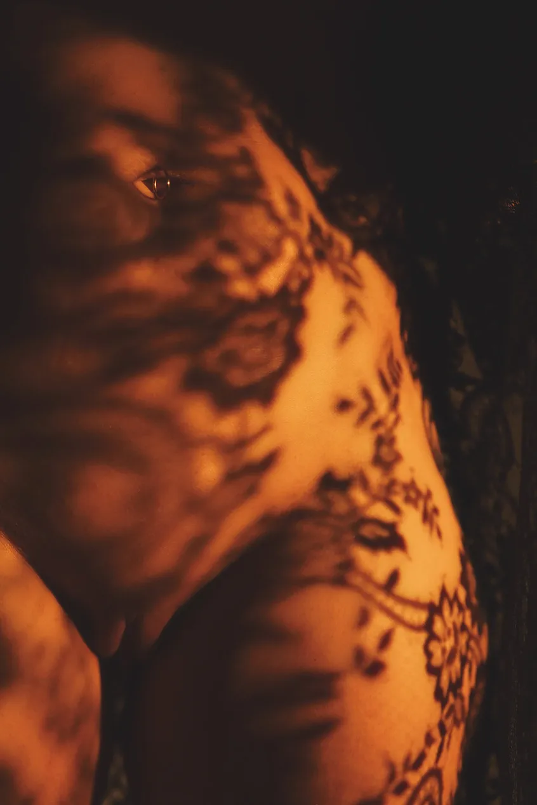